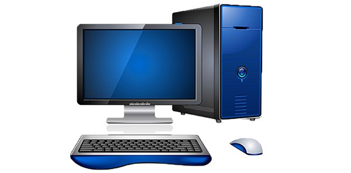
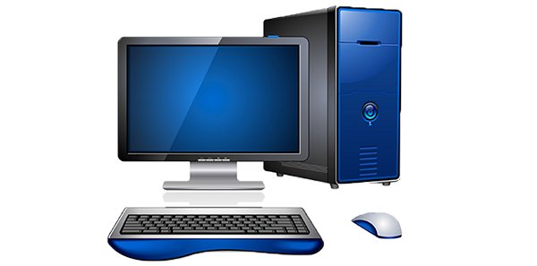

- We shine in solving your computer needs.
- Affordable upgrades.
- Quick 2-day returns on troubleshooting or upgrades.
- We are also Apple OS/X certified.

1234 Main Street, EL Paso, Texas 79906, Phone:(915) 555.1234, Fax: (915) 555.1233
|
|
| Services Contact Us |
|
|

|
| At Interface Computers, our expert team of technicians is ready to help with your technology infrastructure. From custom consulting projects to managed networks, we leverage our knowledge and apply it to your project, giving you the ability to solve and manage tasks effectively. Our CompTIA, Cisco, Microsoft, and Apple computer repair certified technicians and specialists can assist you from virus removals to computer hardware failure, networking, data recovery, and beyond. |
|
INTERFACE COMPUTERS© 2015 1234 Main Street, EL Paso, Texas 79906, Phone:(915) 555.1234, Fax: (915) 555.1233 |